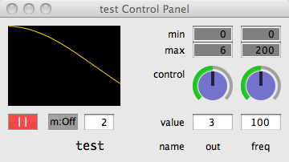

SynthDefAutogui automatic GUI creation for synthDefs and synths
andrea valle, jan 2010
Inherits from: Object
SynthDefAutogui allows to create a gui to control/monitor the behavior of a running synth, or to test a SynthDef, without recurring to SynthDescLib. It does not require previous planning. No store or memStore.
Its main usage is inside two methods added to SynthDef and Synth classes, i.e aSynthDef.autogui and aSynth.autogui, but it can be instanced explicitly when needed. See examples.
Some Important Issues Regarding SynthDefAutogui
In order to work, SynthDefAutogui needs to overwrite the build method of SynthDef. This is not a fortunate choice, but actually is the only way to generically access sythDefs after their creation. Every time a SynthDef is created, it is stored inside a special class, SynthDefStorage, that is just a wrapper for a dictionary. In this way, a Dictionary associating a SynthDef name and a SynthDef becomes available to inspection.
s.boot ;
// a SynthDef
a = SynthDef(\test, {arg out = 3, freq = 100; Out.ar(out, SinOsc.ar(freq))}) ;
z = SynthDefAutogui(\test) ;
// Separate gui call
a = SynthDef(\test, {arg out = 3, freq = 100; Out.ar(out, SinOsc.ar(freq))}) ;
z = SynthDefAutogui(\test, onInit: false) ;
z.autogui ; // the autogui method actually creates the gui

The gui works as follow:
- a scope is created allowing to see the signal (the scope is optional, see later)
- if the SynthDef has an out argoment, the scope inspects it, otherwise it defaults to 0
- for each arg, the min/max fields define the range where the knob works
- you can set the value by moving knob or by writing into numberbox
- each arg is specified by a ControlSpec. For each SynthDef's arg, you can pass a ControlSpec (see later) as an argument fo the autogui method. You can do it graphically by selecting the name of the arg and pressing a key (whatever). A GUI appears allowing to apply a ControlSpec for the selected arg
- the first button plays/pauses the synth
- the second button allows monitoring. When it's "On", a task inspects the controls related to args on the synth and updates the gui. While monitoring you can still control the synth with the gui
- the numberbox allows to set an update rate for the task (times per sec)
- the name of the SynthDef is plotted in the gui and as the name of the window
NOTE: the class is written in a generic GUI style, but it has been tested mainly with SwingOSC on MacOSX.
With Cocoa, scoping needs internal server, and there could be layout issues.
Known Bug: array preset in ControlSpec GUI doesn't work
Creation / Class Methods
*new (name, aSynth, rate, target, args, addAction, closeOnCmdPeriod, freeOnClose, window, step, hOff, vOff, scopeOn, specs)
The main method where all parameters are set
name - Name of the SynthDef to inspect. Default value is nil.
aSynth - The synth to autogui. Default value is nil. If you pass a synth, that synth is inspected.
If not, a synth is created on the fly. The second case is useful when you want an autogui for a SynthDef, to understand how it works.
rate - The rate of the bus shown by embedded stethoscope. Default value is 'audio'.
target - See SynthDef. Default value is nil.
args - See SynthDef. Default value is nil.
addAction - See SynthDef. Default value is 'addToTail'.
closeOnCmdPeriod - Boolean, whether cmdPeriod closes the window or not. Default value is true.
freeOnClose - Boolean, whether closing the window frees the synth or not. Default value is true.
window - You can pass an external window. Default value is nil.
step - Step is the base dimension in pixel used for calculating all. It allows to rescale the autogui. Default value is 50.
hOff - An horizontal offset in pixel, useful when placing the gui in an external window. Default value is 0.
vOff - A vertical offset in pixel, useful when placing the gui in an external window. Default value is 0.
scopeOn - Boolean, whether a scope view is on, plotting the signal. Default value is true. When false, layout is tightened
specs - A dictionary associating argument names to ControlSpecs. This allows to define how the gui works (ranges, warp, step, default). For each arg, if no spec is present in specs, minval is 0, maxval is (default arg *2).max(1), and mapping is linear. Default value is nil. You can set it after graphically (see before)
onInit - Boolean. If true, while creating the SynthDefAutogui the gui is created. Default value is true.
// See examples later for use of the args
Doing Some Task
Substantially there is only one useful method, autogui, typically embedded as the autogui extension of Synth and SynthDef
autogui
This is the method actually creating the gui. It is separated from init for more flexibility
startMonitor/stopMonitor
Interface for update task. The actions are implemented by the monitor button.
Examples
Note: after an example, by pressing command+. the window will be closed.
// better
Server.local.boot;
// if you use scope, with cocoa you need internal
// using the SynthDef
SynthDef(\test, {arg out = 3, freq = 100; Out.ar(out, SinOsc.ar(freq))}) ;
SynthDefAutogui(\test) ; // a synth is created
// instantiating a synth, and calling the gui
SynthDef(\test, {arg out = 3, freq = 1000; Out.ar(out, SinOsc.ar(freq))}).send(s) ;
x = Synth(\test).autogui ;
x.set(\out, 0) ; // if monitor is off, change is not reflected on gui
x.set(\freq, 400) ;
// now press the monitor button, and you'll see the udpated values, then
x.set(\freq, 200) ; // gui is updated
// on CmdPeriod, window is close
// again
x = Synth(\test) ;
g = SynthDefAutogui(\test, x) ;
x.set(\out, 0) ;
// now toggle monitor button
// after increase rate up to 10
{ inf.do{ x.set(\freq, rrand(100, 1000) ); 0.1.wait}}.fork ;
////////////////////////////
// the same with Cocoa
////////////////////////////
GUI.cocoa ;
s = Server.internal.boot;
// using the SynthDef
SynthDef(\test, {arg out = 3, freq = 100; Out.ar(out, SinOsc.ar(freq))}) ;
SynthDefAutogui(\test, target:s).autogui ; // a synth is created, note the target arg
// instantiating a synth, and calling the gui
SynthDef(\test, {arg out = 3, freq = 1000; Out.ar(out, SinOsc.ar(freq))}).send(s) ;
x = Synth(\test).autogui(target:s) ;
x.set(\out, 0) ; // if monitor is off, change is not reflected on gui
x.set(\freq, 400) ;
// now press the monitor button, and you'll see the udpated values, then
x.set(\freq, 200) ; // gui is updated
// on CmdPeriod, window is close
// BUG: scope doesn't reflect wave
// BUG2: layout is messy
// seems to be a cocoa stuff
// again
x = Synth(\test) ;
g = SynthDefAutogui(\test, x, target:s).autogui ;
x.set(\out, 0) ;
// now toggle monitor button
// after increase rate up to 10
{ inf.do{ x.set(\freq, rrand(100, 1000) ); 0.1.wait}}.fork ;
/////////////////////////////////////////////////////////
// Using the autogui methods with SynthDefs and Synth
/////////////////////////////////////////////////////////
// 1. Minimal usage
Server.local.boot ;
// easy for testing
x = {SinOsc.ar}.play.autogui ;
// just press CmdPeriod
// A def
(
SynthDef(\test, {arg out = 0, freq = 300, mul = 0.3, pf = 5 ;
Out.ar(out, SinOsc.ar(freq)*mul*LFPulse.kr(pf))
}).send(s) ;
)
// creating and controlling
x = Synth(\test).autogui ;
// no scope
x = Synth(\test).autogui(scopeOn:false) ;
// using the rate arg
// control rate outs
(
SynthDef(\test, {arg out = 0, freq = 300, mul = 0.3, pf = 5 ;
Out.kr(out, SinOsc.kr(freq)*mul*LFPulse.kr(pf))
}).send(s) ;
)
x = Synth(\test).autogui(\control) ; // using the rate arg
// an example from the SC examples
(
SynthDef(\theremin, { arg mod = 7, detune = 0;
var f, a, z;
f = MouseY.kr(4000, 200, 'exponential', 0.8) + detune;
a = SinOsc.ar(f + (f * SinOsc.ar(mod,0,0.02)), mul: MouseX.kr(0, 0.9));
z = Mix.ar(a);
Out.ar(0, z) + Out.ar(1, z)
}).autogui
)
// Using specs
// note how the specs affect the gui's behavior.
// e.g. frequency knob acts in range 20-20000, with an exponential increase
// with step = 1, and default to 440
// if e.g. \freq were not present in the dict
// default freq would be taken from SinthDef, i.e. 300
// range would be: 0-300*2
// mapping would be linear
(
x = Synth(\test).autogui
)
// vs.
(
x = Synth(\test).autogui(specs:
(\out: [0, 1, \lin, 1, 0],
\freq: [20, 20000, \exp, 1, 440],
\mul: [0, 1, \lin, 0.01, 0.3],
\pf: [1, 100, \lin, 1, 5])) ;
)
///////////////
// 2. Using the out arg
(
SynthDef(\test2, {arg in = 2, out = 0, freq = 100, mul = 0.3, pf = 5 ;
Out.ar(out, In.ar(in)*SinOsc.ar(freq)*mul*LFPulse.kr(pf))
}).send(s) ;
// a bunch of signal to a bunch of busses
14.do{ |i|
var ug = [Pulse, SinOsc, Saw].choose ;
var fr = rrand(100, 1000) ;
{Out.ar(i+2, ug.ar(fr))}.play
}
)
s.scope(16) ; // see all
// be sure to add to tail, so we can push into the in the busses
// we specify a spec for in, so that it reads from busses 2-14
x = Synth(\test2, addAction:\addToTail).autogui(specs:(\in: [2, 14, \lin, 1, 2])) ;
// 3.
// doing with four
// using ins to connect modules
(
SynthDef(\I_pulse, {arg out = 2, freq = 10 ;
Out.ar(out, LFPulse.ar(freq))
}).send(s) ;
// Ring Mod by I_pulse, to moog filter
SynthDef(\II_source, {arg in = 2, out = 3, freq = 100 ;
Out.ar(out, Saw.ar(freq)*In.ar(in))
}).send(s) ;
// we use it to control gain of the moog filter
SynthDef(\IV_gainControl, {arg out = 4, freq = 2 ;
Out.ar(out, SinOsc.ar(freq, mul: 2, add:2))
}).send(s) ;
// the moog filter
SynthDef(\III_filter, {arg inSig = 3, inGain = 4, out = 0, freq = 2000 ;
Out.ar(out, MoogFF.ar(In.ar(inSig), freq, In.ar(inGain)))
}).send(s) ;
)
(
// four synths
Synth(\II_source).autogui ;
Synth(\I_pulse, addAction:\addToHead).autogui ;
Synth(\IV_gainControl, addAction:\addToHead).autogui ;
Synth(\III_filter, addAction:\addToTail).autogui ;
)
// 4.
// mapping
(
SynthDef(\sin, {arg out = 0, freq = 400; Out.ar(out, SinOsc.ar(freq))}).send(s) ;
SynthDef(\mod, {arg out = 2, freq = 3 ; Out.kr(out, Saw.kr(freq, mul: 100, add: 200))}).send(s)
)
a = Synth(\sin).autogui;
b = Synth(\mod, addAction:\addToHead).autogui(\control) ;
// you won't see in the scope, out of range, but works
// now evaluate this
a.map(\freq, 2) ; // freq f a is controlled by output of b
// 5.
// exporting window and rescaling
s.boot ;
// external window. Note that CmdPeriod doesn't work, must be registered in case
w = Window.new("SupaSyntha", Rect(20, 20, 300, 580)).front ;
// you cannot know from outside width of the modules as it depedn on number of args
// but height, yes, it's (step*3/5*6), --> step*3.6
~height = 40*3/5*6 ;
(
SynthDef(\sin, {arg out = 2, freq = 100; Out.ar(out, SinOsc.ar(freq))}).autogui(window:w, step:40) ;
SynthDef(\imp, {arg out = 3, freq = 25; Out.ar(out, Impulse.ar(freq))}).autogui(window:w, vOff: ~height, step:40) ;
SynthDef(\saw, {arg out = 4, freq = 50; Out.ar(out, Saw.ar(freq))}).autogui(window:w, step:40, vOff: ~height*2) ;
SynthDef(\pul, {arg out = 5, freq = 10; Out.ar(out, Pulse.ar(freq))}).autogui(window:w, step:40, vOff: ~height*3) ;
// note that we have rescaled by setting step to 40 (default is 50)
// (move out knob to push out to public busses)
)
// another one, just to test a complex layout
Server.local.boot;
(
var step = 30 ; // smaller and smaller
var height = step*3.6 ; // made some calculations
var w = Window.new("SupaSyntha", Rect(20, 20, 1250, height*6)).front ;
var out, freq, synth ;
{
// send the synthDef
SynthDef(\Sinner, {arg out = 3, freq = 1000;
Out.ar(out, SinOsc.ar(freq))}).send(s) ;
s.sync ; // wait until it's compiled, see Server
// then
30.do {|i|
out = i+2 ; freq = 50*i+50 ;
Synth(\Sinner)
.set(\out, out, \freq, freq)
.autogui(window:w, step:30, vOff: height*(i%6), hOff:250*((i/6)).asInteger)
}
}.fork(AppClock)
)
// compact layout with no scope
(
var step = 30 ; // smaller and smaller
var height = step*3.6 ; // made some calculations
var w = Window.new("SupaSyntha", Rect(20, 20, 1250, height*6)).front ;
var out, freq, synth ;
{
// send the synthDef
SynthDef(\Sinner, {arg out = 3, freq = 1000;
Out.ar(out, SinOsc.ar(freq))}).send(s) ;
s.sync ; // wait until it's compiled, see Server
// 48 vs. 30 of the previous example
48.do {|i|
out = i+2 ; freq = 50*i+50 ;
Synth(\Sinner)
.set(\out, out, \freq, freq)
.autogui(window:w, step:30, vOff: height*(i%6), hOff:155*((i/6)).asInteger, scopeOn:false)
}
}.fork(AppClock)
)